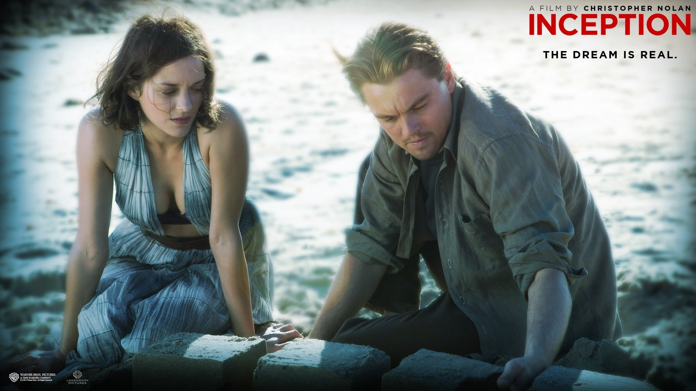
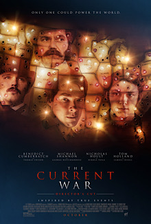
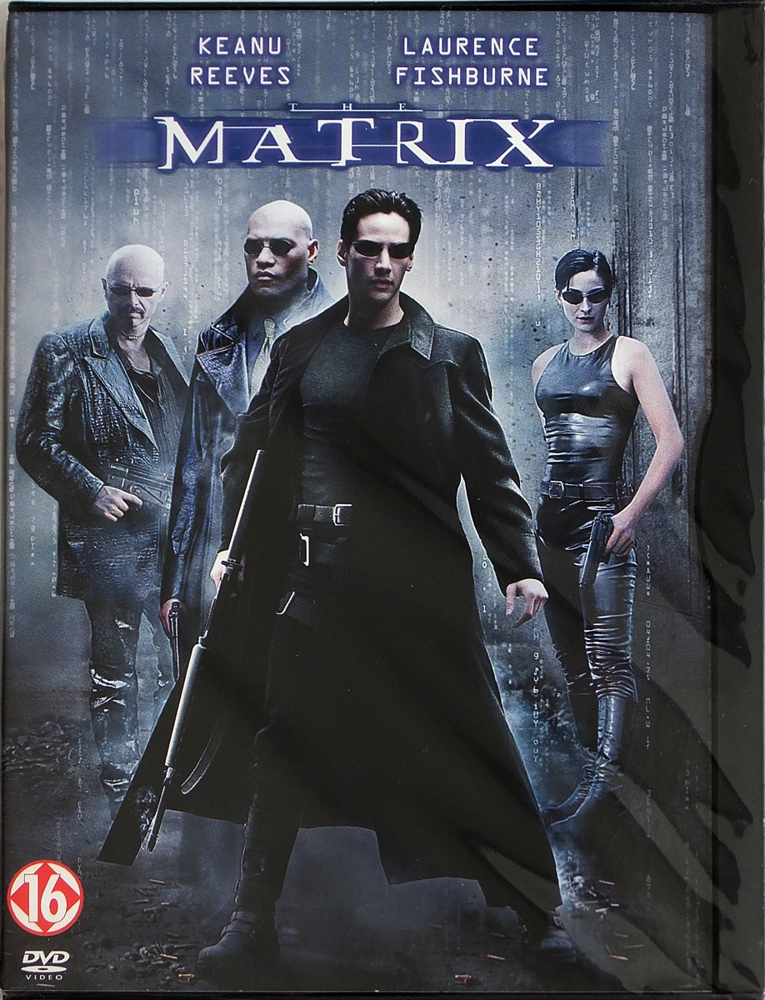

Sci-Fi Movies
-

Justice League- Snyder's Cut
In 2067, a global famine caused humanity to abandon scientific pursuits such as space exploration. Ex-NASA pilot Joseph Cooper is forced to work as a farmer. One day, Cooper experiences a gravitational "anomaly" in his daughter Murph's bedroom. He deduces it to be a pattern of GPS coordinates and arrives at a secret NASA facility headed by Professor Brand. Brand explains to Cooper that it is engaged in a secret mission to discover an exoplanet capable of supporting life and that he is working on a gravity-equation.
See more -

Ad Astra
In the late 21st century, the Solar System is being struck by mysterious power surges, threatening all human life. Major Roy McBride, son of presumed-dead astronaut H. Clifford McBride is informed by U.S. Space Command (SpaceCom) that the surges have been traced to the "Lima Project", created 29 years earlier under Clifford's leadership to search the galaxy for intelligent life. Nothing has been heard from the Lima crew since reaching Neptune 16 years ago. Told his father may be alive, Roy agrees to travel to Mars from where he can attempt to establish communication with him
See more -

Inception
Cobb and Arthur are "extractors"; they perform corporate espionage using experimental dream-sharing technology to infiltrate their targets' subconscious and extract information. Their latest target, Saito, is impressed with Cobb's ability to layer multiple dreams within each other and offers to hire Cobb for the supposedly impossible job of implanting an idea into a person's subconscious; performing "inception" on Robert, the son of Saito's competitor Maurice Fischer, with the idea to dissolve his father's company. Saito promises to clear Cobb's criminal status, allowing him to return home to his children.
See more -

The Current War
In 1880, Thomas Edison has unveiled his electric lightbulb. He plans to distribute power to American neighborhoods using Direct Current (DC), which is cheaper and cleaner than gaslight, but is limited in range and needs an expensive wiring infrastructure. George Westinghouse, a successful business man and inventor himself, wishes to learn more, and invites Edison to dinner. After being snubbed by Edison, Westinghouse sets out to prove alternating current (AC) is the better technology, as it can work over greater distances and at significantly lower cost.
See more -

The Matrix
At an abandoned hotel, a police squad corners Trinity, who overpowers them with superhuman abilities. She flees, pursued by the police and a group of suited Agents capable of similar superhuman feats. She answers a ringing public telephone and vanishes. Computer programmer Thomas Anderson, known by his hacking alias "Neo", is puzzled by repeated online encounters with the phrase "the Matrix". Trinity contacts him and tells him a man named Morpheus has the answers Neo seeks. A team of Agents and police, led by Agent Smith, arrives at Neo's workplace in search of him.
See more